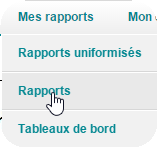
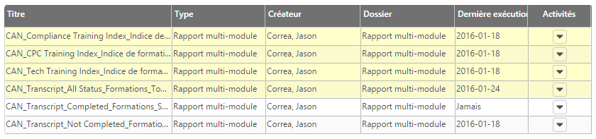
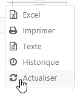
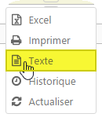
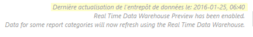
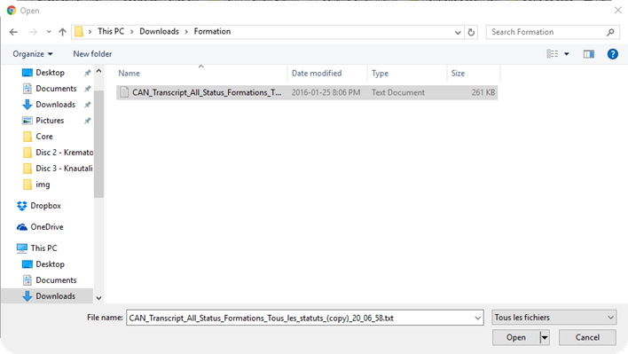
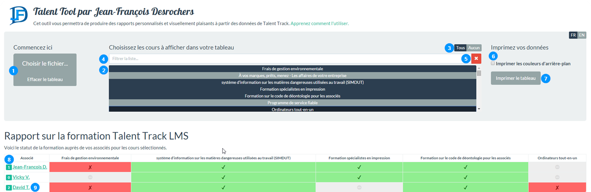
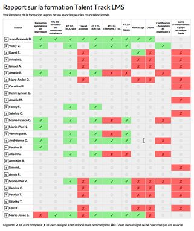

Bienvenue dans Talent Tool. Cet outil vous aidera dans le suivi de la formation de votre équipe, mais d'abord, apprenons à l'utiliser.
Avant de pouvoir manipuler les données de formation et de créer des rapports personnalisés, vous devez obtenir les données de Talent Track. Voici les étapes pour y arriver.
Connectez-vous à Talent Track. Vous trouverez le lien sur la page principale de The Hub. Alternativement, si vous n'êtes pas sur un ordinateur relié au réseau Staples, vous pouvez accéder le site via ce lien: http://bit.ly/talenttrack.
Une fois sur Talent Track, dans la barre de menus, mettez votre curseur sur Mes rapports et cliquez sur Rapports.

Sur la page des rapports, vous trouverez les rapports suivants:

Sur les rapports de la liste, par contre, seuls les quatres premiers nous intéressent:
Si votre objectif est d'avoir le meilleur Indice de formation possible, les trois rapports ci-haut devraient être suffisants. Si, par contre, vous voulez personnaliser la liste de formation aux besoins de votre succursale et/ou faire le suivi de nouveaux cours, vous allez réellement débloquer le plein potentiel de Talent Tool avec le rapport suivant:
Pour les besoins de ce tutoriel, assumons que c'est ce dernier rapport qui vous intéresse. Voici comment le télécharger:
Cliquez sur la petite flèche dans la colonne Activités correspondant au rapport souhaité.
Dans le menu qui apparaît, cliquez sur Actualiser

Le statut passera à En cours de traitement... et changera à la date d'aujourd'hui lorsque le rapport sera prêt à télécharger.
Cliquez de nouveau sur la petite flèche pour ré-ouvrir le menu Activités et sélectionnez Texte dans les choix présentés. Il est important de choisir Texte, car Talent Tool ne fonctionnera pas avec d'autres formats.

Note: Comment savoir en date de quand les données sont-elles à jour? Vous n'avez qu'à regarder les petits caractères en bas de la page: 
Maintenant que vous avez votre fichier, il est temps de s'amuser avec !
Vous venez littéralement de compléter l'étape la plus difficile de l'opération! Découvrons maintenant ce que Talent Tool a à vous offrir. Si vous désirez continuer de suivre ce guide tout en utilisant Talent Tool, cliquez avec le bouton droit sur ce lien et sélectionnez Ouvrir dans un nouvel onglet. Une fois sur le site, cliquez sur Choisir le fichier... et sélectionnez le fichier que vous avez sauvegardé dans l'étape précédente.

Note: Si aucune fenêtre vous permettant de choisir un fichier ne s'ouvre, c'est que vous tentez d'utiliser Talent Tool avec un navigateur non supporté. Essayez d'ouvrir la page avec Google Chrome, Mozilla Firefox ou Apple Safari (basiquement tout navigateur sauf Microsoft Internet Explorer). Je recommande Google Chrome, car non seulement offre-t-il la possibilité d'imprimer un tableau vers un fichier PDF, mais c'est également le navigateur qui offre de loin la meilleure qualité d'impression.
Vous devriez désormais être accueilli avec l'écran suivant:

échap sur votre clavier.Maintenant que vous connaissez l'interface de Talent Tool, essayons de générer un rapport personnalisé. Nous avons vu précédemment que Talent Track nous offre un rapport pour l'indice de formation du Centre de Copies et d'Impression et du Techno-Centre. Maintenant, supposons que vous être Superviseur de Service et que vous voulez un rapport qui combine les cours de ces deux rapports. Ouvrez le rapport CAN Transcript All Status que vous avez créé tout à l'heure et effectuez les étapes suivantes:
Aucun pour effacer la tableau.4t comme filtre et sélectionnez tous les cours qui sont listés. Effacez le champ.dép comme filtre et sélectionnez Dépôt. Effacez le champ.trav comme filtre et sélectionnez Travail accompli. Effacez le champ.ram comme filtre et sélectionnez Ramassage. Effacez le champ.tech comme filtre et sélectionnez Camp d'entraînement Équipe technique fiable. Effacez le champ.impr comme filtre et sélectionnez Formation spécialistes en impression et Certification « Spécialiste en impression ». Effacez le champ.Imprimer le tableau. Et voilà un magnifique rapport personnalisé !